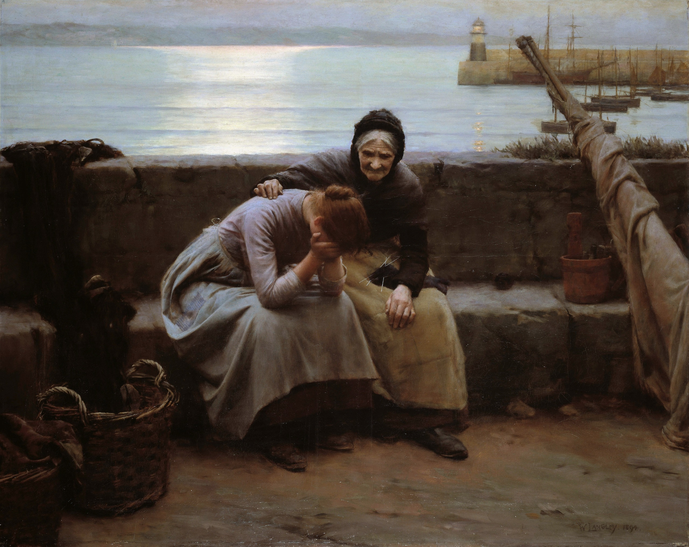

"Me siento triste"
Date cuenta alguna vez de que tienes dentro de ti algo más fuerte y más milagroso que lo que provoca los sentimientos y, en una palabra, te maneja como marioneta.
Libro 12 Pensamiento 19 (12:19)
En algunas ocasiones nuestro pensamiento puede ser limitado y esas mismas veces nos orilla a encontrarnos en los más profundo del Grand Canyon, sin darnos cuenta que al salir a la superficie tenemos muchas opciones por donde encontrar la felicidad.
Pero claro nada lo podemos ver claro, pero existe un concepto que nunca lo hemos puesto la atención como de ser y lo ignoramos para vivir en nuestro pequeño mundo; este concepto es “la verdad”, tal vez suene muy simple, pero una vez nuestro sentimientos fluyen dejamos la verdad en un plano que ignoramos. Entonces te estarás preguntando, ¿Porqué algo tan sencillo me puede traer la felicidad?.
Si establecemos la verdad en primer plano…
Ver más
Escrito por Alberto Ornelas